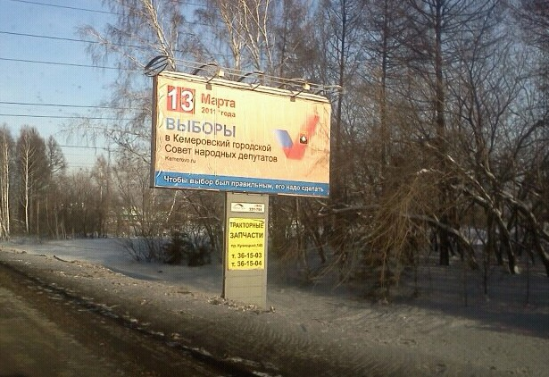
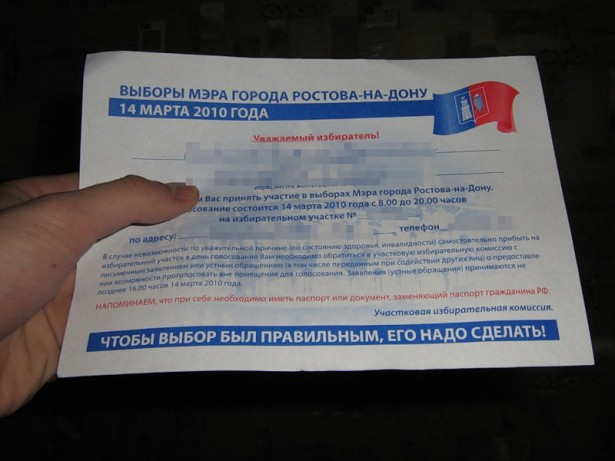

Бывает так что у людей совсем нечего сказать. Тогда умные люди предпочитают промолчать.
Другие люди вместо молчания, которое — золото, могут поделиться с вами мыслью, которая была вычитана в специально для этого выложенной в туалете книге с названием что-то вроде «1000 великих цитат великих людей». Сидишь вот так вот в туалете, на айпэд еще не разорился, и растешь духовно. Прочитаешь и думаешь, блин ведь так просто. Почему сам не догадался а? Это же очевидно.
Особенно любят делиться не своими мыслями обитатели ЛиРу и Вконтакте.
В городе Кемерово в марте этого года пройдут выборы в городской совет народных депутатов и наружка «С праздником!» временно заменена на рекламу этих выборов. Слоган наружки категорически не рекомендуется к прочтению больным шизофренией.

Думаю на участках голосования надо добавить инструкций вроде:
- Чтобы прийти на выборы надо паспорт
- Чтобы зайти на участок, надо открыть дверь
- Чтобы проголосовать, надо использовать ручку
- Чтобы узнать результаты надо телевизор
Радует немного то, что слоган вероятно придуман все-таки не в Кузбассе
